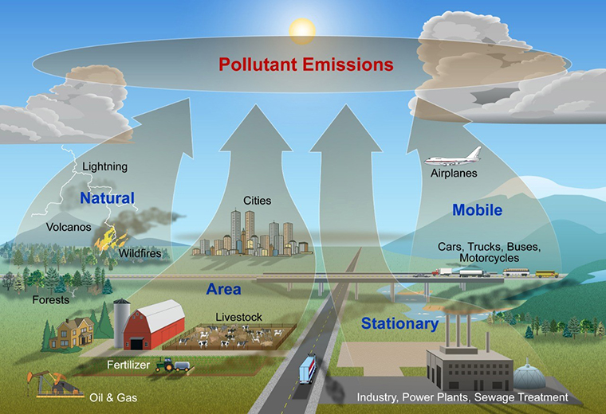
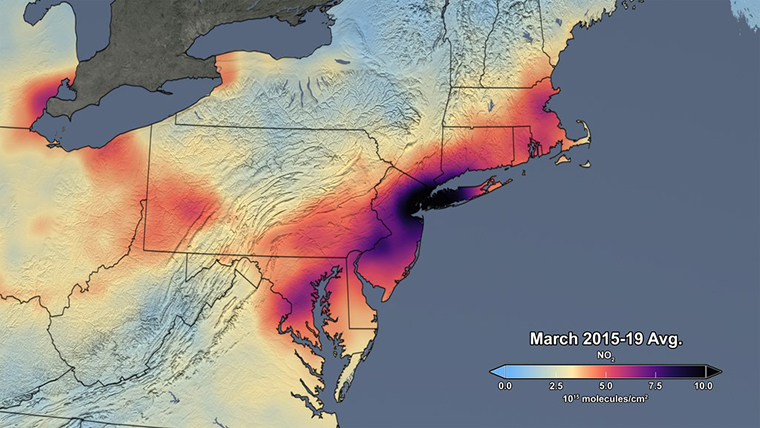
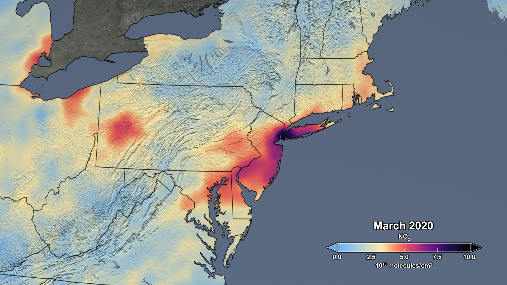
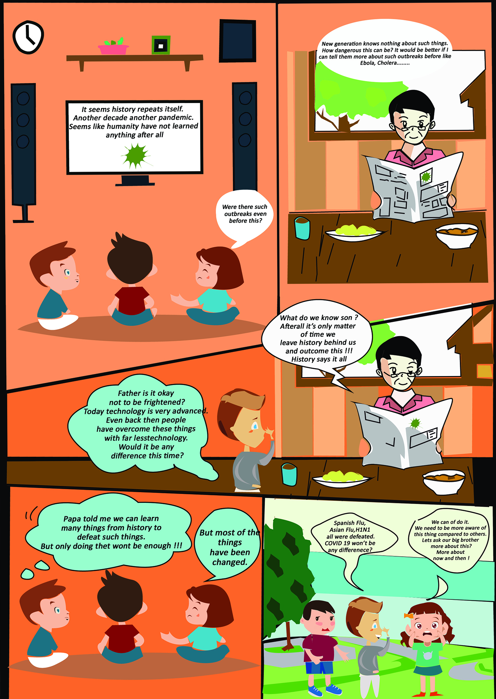

Impact of the COVID-19 Pandemic on the Environment
31.05.2020
Three and half billion people are confined in some way around the planet. That is almost half of the world’s population. The worldwide disruption caused by the Covid-19 pandemic has resulted in numerous impacts on the environment. Quarantine and social distancing measures have been implemented to counter the onset and rapid spread of COVID-19 around the world. Air traffic has nearly ceased; non-essential businesses have closed, the number of people on the road is much lower than normal. Due to this drastic alteration in human behavior, changes in the environment are beginning to occur.
Air Quality
Due to corona virus pandemic’s impact on the travel and industry, many regions and the planet as a whole experienced a drop in air pollution.
Nitrogen Dioxide (NO2) is a pollutant, the primary sources being the burning of fossils fuels, automobiles and industry. Empty roads leading the reduction in pollution in vehicles. Following images from European Space Agency (ESA) shows the difference in NO2 concentrations between March 2019 and March 2020.
 
